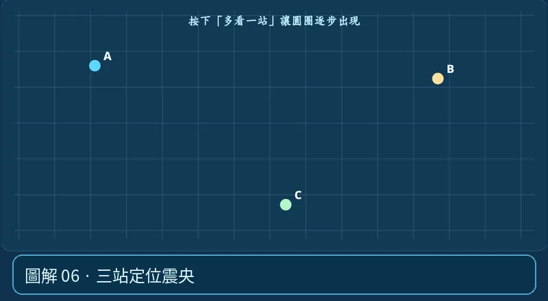

第 01 單元｜圖解 6/6｜課本 p.66–67
三站定位震央
各測站由時差估算與震央的距離，在地圖以測站為圓心畫圓。三個圓交會區可以定位震央；精確定位還需更多測站與速度模型。
① 看一眼② 操作圖③ 自己推理④ 揭開解答
🔬 這張圖，請自己動手試
操作圖上方的頁籤、滑桿或按鈕；圖片也能左右滑動放大觀看。
互動圖解 · 三站定位震央

原創 SVG 地科教學模型，方便理解，非真實比例、非即時地震資料；互動無法載入時仍有靜態圖。
STEP 01 · 先觀察
👀 眼睛先找線索
按「多看一站」依序畫出 A、B、C 三個測站的距離圓，觀察交點如何從多種可能縮成一處。
💡 為什麼是這樣？
每站由走時推估一個距離；地圖上圓圈是可能震央位置，兩圓常有兩個交點，第三站有助消除歧義。
🎯 換個問法想一題
只靠一個測站的 P−S 時差，能確定震央在測站東邊嗎？
我想好了，點開看答案 ↓
不能，還需要其他測站的距離資訊。
⚡ 一句記住：三個圈才找得到點